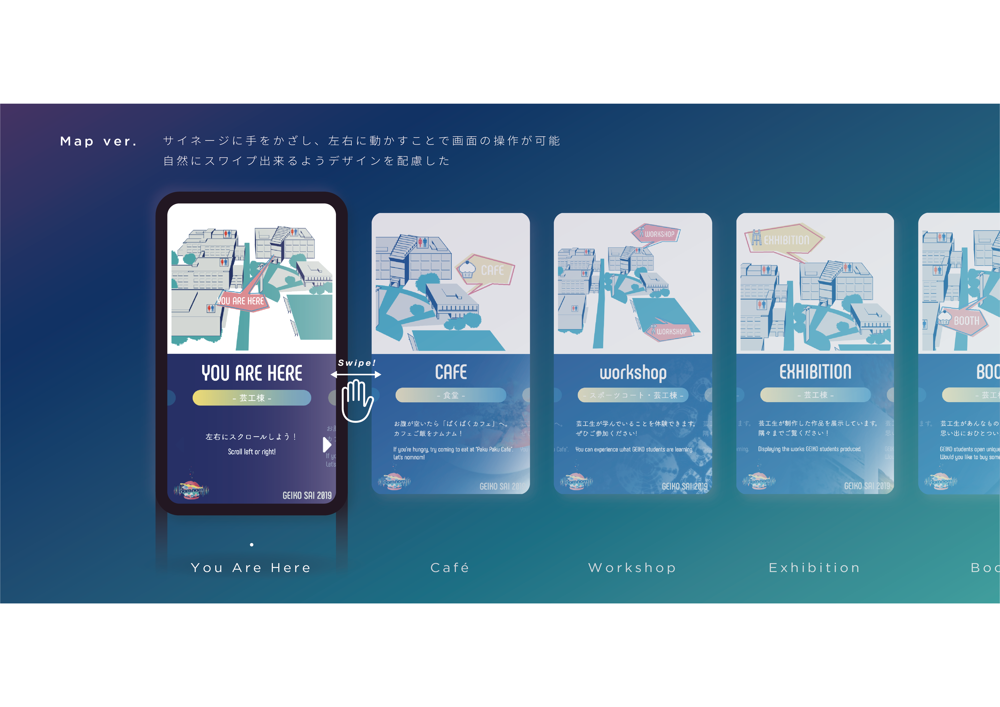

Digital Sinage for nomnom
2019 UI Design
学園祭で制作したデジタルサイネージ。
平常時はイベントのキービジュアルだが、来場者が近付くと気軽に操作が可能な会場案内に切り替わる仕様になっている。インタラクティブな要素をプラスしたデジタルサイネージによって来場者を楽しませ、会場をコンテンポラリーな空間へ変化させた。
producer/ui designer: Taisei Ito
remote sensing engineer: Yuki Oshiro
front-end engineer: Rina Imai
-

- 